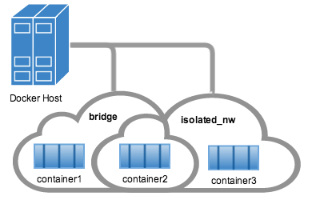

Work with network commands
This article provides examples of the network subcommands you can use to interact with Docker networks and the containers in them. The commands are available through the Docker Engine CLI. These commands are:
docker network createdocker network connectdocker network lsdocker network rmdocker network disconnectdocker network inspect
While not required, it is a good idea to read Understanding Docker
network before trying the examples in this section. The
examples for the rely on a bridge network so that you can try them
immediately. If you would prefer to experiment with an overlay network see
the Getting started with multi-host networks instead.
Create networks
Docker Engine creates a bridge network automatically when you install Engine.
This network corresponds to the docker0 bridge that Engine has traditionally
relied on. In addition to this network, you can create your own bridge or overlay network.
A bridge network resides on a single host running an instance of Docker Engine. An overlay network can span multiple hosts running their own engines. If you run docker network create and supply only a network name, it creates a bridge network for you.
$ docker network create simple-network
69568e6336d8c96bbf57869030919f7c69524f71183b44d80948bd3927c87f6a
$ docker network inspect simple-network
[
{
"Name": "simple-network",
"Id": "69568e6336d8c96bbf57869030919f7c69524f71183b44d80948bd3927c87f6a",
"Scope": "local",
"Driver": "bridge",
"IPAM": {
"Driver": "default",
"Config": [
{
"Subnet": "172.22.0.0/16",
"Gateway": "172.22.0.1/16"
}
]
},
"Containers": {},
"Options": {}
}
]
Unlike bridge networks, overlay networks require some pre-existing conditions
before you can create one. These conditions are:
- Access to a key-value store. Engine supports Consul, Etcd, and ZooKeeper (Distributed store) key-value stores.
- A cluster of hosts with connectivity to the key-value store.
- A properly configured Engine
daemon on each host in the swarm.
The docker daemon options that support the overlay network are:
--cluster-store--cluster-store-opt--cluster-advertise
It is also a good idea, though not required, that you install Docker Swarm
to manage the cluster. Swarm provides sophisticated discovery and server
management that can assist your implementation.
When you create a network, Engine creates a non-overlapping subnetwork for the
network by default. You can override this default and specify a subnetwork
directly using the the --subnet option. On a bridge network you can only
specify a single subnet. An overlay network supports multiple subnets.
Note : It is highly recommended to use the --subnet option while creating
a network. If the --subnet is not specified, the docker daemon automatically
chooses and assigns a subnet for the network and it could overlap with another subnet
in your infrastructure that is not managed by docker. Such overlaps can cause
connectivity issues or failures when containers are connected to that network.
In addition to the --subnetwork option, you also specify the --gateway --ip-range and --aux-address options.
$ docker network create -d overlay
--subnet=192.168.0.0/16 --subnet=192.170.0.0/16
--gateway=192.168.0.100 --gateway=192.170.0.100
--ip-range=192.168.1.0/24
--aux-address a=192.168.1.5 --aux-address b=192.168.1.6
--aux-address a=192.170.1.5 --aux-address b=192.170.1.6
my-multihost-network
Be sure that your subnetworks do not overlap. If they do, the network create fails and Engine returns an error.
When creating a custom network, the default network driver (i.e. bridge) has additional options that can be passed.
The following are those options and the equivalent docker daemon flags used for docker0 bridge:
| Option |
Equivalent |
Description |
com.docker.network.bridge.name |
- |
bridge name to be used when creating the Linux bridge |
com.docker.network.bridge.enable_ip_masquerade |
--ip-masq |
Enable IP masquerading |
com.docker.network.bridge.enable_icc |
--icc |
Enable or Disable Inter Container Connectivity |
com.docker.network.bridge.host_binding_ipv4 |
--ip |
Default IP when binding container ports |
com.docker.network.mtu |
--mtu |
Set the containers network MTU |
com.docker.network.enable_ipv6 |
--ipv6 |
Enable IPv6 networking |
For example, now let’s use -o or --opt options to specify an IP address binding when publishing ports:
$ docker network create -o "com.docker.network.bridge.host_binding_ipv4"="172.23.0.1" my-network
b1a086897963e6a2e7fc6868962e55e746bee8ad0c97b54a5831054b5f62672a
$ docker network inspect my-network
[
{
"Name": "my-network",
"Id": "b1a086897963e6a2e7fc6868962e55e746bee8ad0c97b54a5831054b5f62672a",
"Scope": "local",
"Driver": "bridge",
"IPAM": {
"Driver": "default",
"Options": {},
"Config": [
{
"Subnet": "172.23.0.0/16",
"Gateway": "172.23.0.1/16"
}
]
},
"Containers": {},
"Options": {
"com.docker.network.bridge.host_binding_ipv4": "172.23.0.1"
}
}
]
$ docker run -d -P --name redis --net my-network redis
bafb0c808c53104b2c90346f284bda33a69beadcab4fc83ab8f2c5a4410cd129
$ docker ps
CONTAINER ID IMAGE COMMAND CREATED STATUS PORTS NAMES
bafb0c808c53 redis "/entrypoint.sh redis" 4 seconds ago Up 3 seconds 172.23.0.1:32770->6379/tcp redis
Connect containers
You can connect containers dynamically to one or more networks. These networks
can be backed the same or different network drivers. Once connected, the
containers can communicate using another container’s IP address or name.
For overlay networks or custom plugins that support multi-host
connectivity, containers connected to the same multi-host network but launched
from different hosts can also communicate in this way.
Create two containers for this example:
$ docker run -itd --name=container1 busybox
18c062ef45ac0c026ee48a83afa39d25635ee5f02b58de4abc8f467bcaa28731
$ docker run -itd --name=container2 busybox
498eaaaf328e1018042c04b2de04036fc04719a6e39a097a4f4866043a2c2152
Then create an isolated, bridge network to test with.
$ docker network create -d bridge --subnet 172.25.0.0/16 isolated_nw
06a62f1c73c4e3107c0f555b7a5f163309827bfbbf999840166065a8f35455a8
Connect container2 to the network and then inspect the network to verify the connection:
$ docker network connect isolated_nw container2
$ docker network inspect isolated_nw
[
{
"Name": "isolated_nw",
"Id": "06a62f1c73c4e3107c0f555b7a5f163309827bfbbf999840166065a8f35455a8",
"Scope": "local",
"Driver": "bridge",
"IPAM": {
"Driver": "default",
"Config": [
{
"Subnet": "172.21.0.0/16",
"Gateway": "172.21.0.1/16"
}
]
},
"Containers": {
"90e1f3ec71caf82ae776a827e0712a68a110a3f175954e5bd4222fd142ac9428": {
"Name": "container2",
"EndpointID": "11cedac1810e864d6b1589d92da12af66203879ab89f4ccd8c8fdaa9b1c48b1d",
"MacAddress": "02:42:ac:19:00:02",
"IPv4Address": "172.25.0.2/16",
"IPv6Address": ""
}
},
"Options": {}
}
]
You can see that the Engine automatically assigns an IP address to container2.
Given we specified a --subnet when creating the network, Engine picked
an address from that same subnet. Now, start a third container and connect it to
the network on launch using the docker run command’s --net option:
$ docker run --net=isolated_nw --ip=172.25.3.3 -itd --name=container3 busybox
467a7863c3f0277ef8e661b38427737f28099b61fa55622d6c30fb288d88c551
As you can see you were able to specify the ip address for your container.
As long as the network to which the container is connecting was created with
a user specified subnet, you will be able to select the IPv4 and/or IPv6 address(es)
for your container when executing docker run and docker network connect commands.
The selected IP address is part of the container networking configuration and will be
preserved across container reload. The feature is only available on user defined networks,
because they guarantee their subnets configuration does not change across daemon reload.
Now, inspect the network resources used by container3.
$ docker inspect --format='{{json .NetworkSettings.Networks}}' container3
{"isolated_nw":{"IPAMConfig":{"IPv4Address":"172.25.3.3"},"NetworkID":"1196a4c5af43a21ae38ef34515b6af19236a3fc48122cf585e3f3054d509679b",
"EndpointID":"dffc7ec2915af58cc827d995e6ebdc897342be0420123277103c40ae35579103","Gateway":"172.25.0.1","IPAddress":"172.25.3.3","IPPrefixLen":16,"IPv6Gateway":"","GlobalIPv6Address":"","GlobalIPv6PrefixLen":0,"MacAddress":"02:42:ac:19:03:03"}}
Repeat this command for container2. If you have Python installed, you can pretty print the output.
$ docker inspect --format='{{json .NetworkSettings.Networks}}' container2 | python -m json.tool
{
"bridge": {
"NetworkID":"7ea29fc1412292a2d7bba362f9253545fecdfa8ce9a6e37dd10ba8bee7129812",
"EndpointID": "0099f9efb5a3727f6a554f176b1e96fca34cae773da68b3b6a26d046c12cb365",
"Gateway": "172.17.0.1",
"GlobalIPv6Address": "",
"GlobalIPv6PrefixLen": 0,
"IPAMConfig": null,
"IPAddress": "172.17.0.3",
"IPPrefixLen": 16,
"IPv6Gateway": "",
"MacAddress": "02:42:ac:11:00:03"
},
"isolated_nw": {
"NetworkID":"1196a4c5af43a21ae38ef34515b6af19236a3fc48122cf585e3f3054d509679b",
"EndpointID": "11cedac1810e864d6b1589d92da12af66203879ab89f4ccd8c8fdaa9b1c48b1d",
"Gateway": "172.25.0.1",
"GlobalIPv6Address": "",
"GlobalIPv6PrefixLen": 0,
"IPAMConfig": null,
"IPAddress": "172.25.0.2",
"IPPrefixLen": 16,
"IPv6Gateway": "",
"MacAddress": "02:42:ac:19:00:02"
}
}
You should find container2 belongs to two networks. The bridge network
which it joined by default when you launched it and the isolated_nw which you
later connected it to.

In the case of container3, you connected it through docker run to the
isolated_nw so that container is not connected to bridge.
Use the docker attach command to connect to the running container2 and
examine its networking stack:
$ docker attach container2
If you look a the container’s network stack you should see two Ethernet interfaces, one for the default bridge network and one for the isolated_nw network.
/ # ifconfig
eth0 Link encap:Ethernet HWaddr 02:42:AC:11:00:03
inet addr:172.17.0.3 Bcast:0.0.0.0 Mask:255.255.0.0
inet6 addr: fe80::42:acff:fe11:3/64 Scope:Link
UP BROADCAST RUNNING MULTICAST MTU:9001 Metric:1
RX packets:8 errors:0 dropped:0 overruns:0 frame:0
TX packets:8 errors:0 dropped:0 overruns:0 carrier:0
collisions:0 txqueuelen:0
RX bytes:648 (648.0 B) TX bytes:648 (648.0 B)
eth1 Link encap:Ethernet HWaddr 02:42:AC:15:00:02
inet addr:172.25.0.2 Bcast:0.0.0.0 Mask:255.255.0.0
inet6 addr: fe80::42:acff:fe19:2/64 Scope:Link
UP BROADCAST RUNNING MULTICAST MTU:1500 Metric:1
RX packets:8 errors:0 dropped:0 overruns:0 frame:0
TX packets:8 errors:0 dropped:0 overruns:0 carrier:0
collisions:0 txqueuelen:0
RX bytes:648 (648.0 B) TX bytes:648 (648.0 B)
lo Link encap:Local Loopback
inet addr:127.0.0.1 Mask:255.0.0.0
inet6 addr: ::1/128 Scope:Host
UP LOOPBACK RUNNING MTU:65536 Metric:1
RX packets:0 errors:0 dropped:0 overruns:0 frame:0
TX packets:0 errors:0 dropped:0 overruns:0 carrier:0
collisions:0 txqueuelen:0
RX bytes:0 (0.0 B) TX bytes:0 (0.0 B)
On the isolated_nw which was user defined, the Docker embedded DNS server enables name resolution for other containers in the network. Inside of container2 it is possible to ping container3 by name.
/ # ping -w 4 container3
PING container3 (172.25.3.3): 56 data bytes
64 bytes from 172.25.3.3: seq=0 ttl=64 time=0.070 ms
64 bytes from 172.25.3.3: seq=1 ttl=64 time=0.080 ms
64 bytes from 172.25.3.3: seq=2 ttl=64 time=0.080 ms
64 bytes from 172.25.3.3: seq=3 ttl=64 time=0.097 ms
--- container3 ping statistics ---
4 packets transmitted, 4 packets received, 0% packet loss
round-trip min/avg/max = 0.070/0.081/0.097 ms
This isn’t the case for the default bridge network. Both container2 and container1 are connected to the default bridge network. Docker does not support automatic service discovery on this network. For this reason, pinging container1 by name fails as you would expect based on the /etc/hosts file:
/ # ping -w 4 container1
ping: bad address 'container1'
A ping using the container1 IP address does succeed though:
/ # ping -w 4 172.17.0.2
PING 172.17.0.2 (172.17.0.2): 56 data bytes
64 bytes from 172.17.0.2: seq=0 ttl=64 time=0.095 ms
64 bytes from 172.17.0.2: seq=1 ttl=64 time=0.075 ms
64 bytes from 172.17.0.2: seq=2 ttl=64 time=0.072 ms
64 bytes from 172.17.0.2: seq=3 ttl=64 time=0.101 ms
--- 172.17.0.2 ping statistics ---
4 packets transmitted, 4 packets received, 0% packet loss
round-trip min/avg/max = 0.072/0.085/0.101 ms
If you wanted you could connect container1 to container2 with the docker
run --link command and that would enable the two containers to interact by name
as well as IP.
Detach from a container2 and leave it running using CTRL-p CTRL-q.
In this example, container2 is attached to both networks and so can talk to
container1 and container3. But container3 and container1 are not in the
same network and cannot communicate. Test, this now by attaching to
container3 and attempting to ping container1 by IP address.
$ docker attach container3
/ # ping 172.17.0.2
PING 172.17.0.2 (172.17.0.2): 56 data bytes
^C
--- 172.17.0.2 ping statistics ---
10 packets transmitted, 0 packets received, 100% packet loss
You can connect both running and non-running containers to a network. However,
docker network inspect only displays information on running containers.
Linking containers in user-defined networks
In the above example, container2 was able to resolve container3’s name automatically
in the user defined network isolated_nw, but the name resolution did not succeed
automatically in the default bridge network. This is expected in order to maintain
backward compatibility with legacy link.
The legacy link provided 4 major functionalities to the default bridge network.
- name resolution
- name alias for the linked container using
--link=CONTAINER-NAME:ALIAS
- secured container connectivity (in isolation via
--icc=false)
- environment variable injection
Comparing the above 4 functionalities with the non-default user-defined networks such as
isolated_nw in this example, without any additional config, docker network provides
- automatic name resolution using DNS
- automatic secured isolated environment for the containers in a network
- ability to dynamically attach and detach to multiple networks
- supports the
--link option to provide name alias for the linked container
Continuing with the above example, create another container container4 in isolated_nw
with --link to provide additional name resolution using alias for other containers in
the same network.
$ docker run --net=isolated_nw -itd --name=container4 --link container5:c5 busybox
01b5df970834b77a9eadbaff39051f237957bd35c4c56f11193e0594cfd5117c
With the help of --link container4 will be able to reach container5 using the
aliased name c5 as well.
Please note that while creating container4, we linked to a container named container5
which is not created yet. That is one of the differences in behavior between the
legacy link in default bridge network and the new link functionality in user defined
networks. The legacy link is static in nature and it hard-binds the container with the
alias and it doesn’t tolerate linked container restarts. While the new link functionality
Now let us launch another container named container5 linking container4 to c4.
$ docker run --net=isolated_nw -itd --name=container5 --link container4:c4 busybox
72eccf2208336f31e9e33ba327734125af00d1e1d2657878e2ee8154fbb23c7a
As expected, container4 will be able to reach container5 by both its container name and
its alias c5 and container5 will be able to reach container4 by its container name and
its alias c4.
$ docker attach container4
/ # ping -w 4 c5
PING c5 (172.25.0.5): 56 data bytes
64 bytes from 172.25.0.5: seq=0 ttl=64 time=0.070 ms
64 bytes from 172.25.0.5: seq=1 ttl=64 time=0.080 ms
64 bytes from 172.25.0.5: seq=2 ttl=64 time=0.080 ms
64 bytes from 172.25.0.5: seq=3 ttl=64 time=0.097 ms
--- c5 ping statistics ---
4 packets transmitted, 4 packets received, 0% packet loss
round-trip min/avg/max = 0.070/0.081/0.097 ms
/ # ping -w 4 container5
PING container5 (172.25.0.5): 56 data bytes
64 bytes from 172.25.0.5: seq=0 ttl=64 time=0.070 ms
64 bytes from 172.25.0.5: seq=1 ttl=64 time=0.080 ms
64 bytes from 172.25.0.5: seq=2 ttl=64 time=0.080 ms
64 bytes from 172.25.0.5: seq=3 ttl=64 time=0.097 ms
--- container5 ping statistics ---
4 packets transmitted, 4 packets received, 0% packet loss
round-trip min/avg/max = 0.070/0.081/0.097 ms
$ docker attach container5
/ # ping -w 4 c4
PING c4 (172.25.0.4): 56 data bytes
64 bytes from 172.25.0.4: seq=0 ttl=64 time=0.065 ms
64 bytes from 172.25.0.4: seq=1 ttl=64 time=0.070 ms
64 bytes from 172.25.0.4: seq=2 ttl=64 time=0.067 ms
64 bytes from 172.25.0.4: seq=3 ttl=64 time=0.082 ms
--- c4 ping statistics ---
4 packets transmitted, 4 packets received, 0% packet loss
round-trip min/avg/max = 0.065/0.070/0.082 ms
/ # ping -w 4 container4
PING container4 (172.25.0.4): 56 data bytes
64 bytes from 172.25.0.4: seq=0 ttl=64 time=0.065 ms
64 bytes from 172.25.0.4: seq=1 ttl=64 time=0.070 ms
64 bytes from 172.25.0.4: seq=2 ttl=64 time=0.067 ms
64 bytes from 172.25.0.4: seq=3 ttl=64 time=0.082 ms
--- container4 ping statistics ---
4 packets transmitted, 4 packets received, 0% packet loss
round-trip min/avg/max = 0.065/0.070/0.082 ms
Similar to the legacy link functionality the new link alias is localized to a container
and the aliased name has no meaning outside of the container using the --link.
Also, it is important to note that if a container belongs to multiple networks, the
linked alias is scoped within a given network. Hence the containers can be linked to
different aliases in different networks.
Extending the example, let us create another network named local_alias
$ docker network create -d bridge --subnet 172.26.0.0/24 local_alias
76b7dc932e037589e6553f59f76008e5b76fa069638cd39776b890607f567aaa
let us connect container4 and container5 to the new network local_alias
$ docker network connect --link container5:foo local_alias container4
$ docker network connect --link container4:bar local_alias container5
$ docker attach container4
/ # ping -w 4 foo
PING foo (172.26.0.3): 56 data bytes
64 bytes from 172.26.0.3: seq=0 ttl=64 time=0.070 ms
64 bytes from 172.26.0.3: seq=1 ttl=64 time=0.080 ms
64 bytes from 172.26.0.3: seq=2 ttl=64 time=0.080 ms
64 bytes from 172.26.0.3: seq=3 ttl=64 time=0.097 ms
--- foo ping statistics ---
4 packets transmitted, 4 packets received, 0% packet loss
round-trip min/avg/max = 0.070/0.081/0.097 ms
/ # ping -w 4 c5
PING c5 (172.25.0.5): 56 data bytes
64 bytes from 172.25.0.5: seq=0 ttl=64 time=0.070 ms
64 bytes from 172.25.0.5: seq=1 ttl=64 time=0.080 ms
64 bytes from 172.25.0.5: seq=2 ttl=64 time=0.080 ms
64 bytes from 172.25.0.5: seq=3 ttl=64 time=0.097 ms
--- c5 ping statistics ---
4 packets transmitted, 4 packets received, 0% packet loss
round-trip min/avg/max = 0.070/0.081/0.097 ms
Note that the ping succeeds for both the aliases but on different networks.
Let us conclude this section by disconnecting container5 from the isolated_nw
and observe the results
$ docker network disconnect isolated_nw container5
$ docker attach container4
/ # ping -w 4 c5
ping: bad address 'c5'
/ # ping -w 4 foo
PING foo (172.26.0.3): 56 data bytes
64 bytes from 172.26.0.3: seq=0 ttl=64 time=0.070 ms
64 bytes from 172.26.0.3: seq=1 ttl=64 time=0.080 ms
64 bytes from 172.26.0.3: seq=2 ttl=64 time=0.080 ms
64 bytes from 172.26.0.3: seq=3 ttl=64 time=0.097 ms
--- foo ping statistics ---
4 packets transmitted, 4 packets received, 0% packet loss
round-trip min/avg/max = 0.070/0.081/0.097 ms
In conclusion, the new link functionality in user defined networks provides all the
benefits of legacy links while avoiding most of the well-known issues with legacy links.
One notable missing functionality compared to legacy links is the injection of
environment variables. Though very useful, environment variable injection is static
in nature and must be injected when the container is started. One cannot inject
environment variables into a running container without significant effort and hence
it is not compatible with docker network which provides a dynamic way to connect/
disconnect containers to/from a network.
Network-scoped alias
While *link*s provide private name resolution that is localized within a container,
the network-scoped alias provides a way for a container to be discovered by an
alternate name by any other container within the scope of a particular network.
Unlike the link alias, which is defined by the consumer of a service, the
network-scoped alias is defined by the container that is offering the service
to the network.
Continuing with the above example, create another container in isolated_nw with a
network alias.
$ docker run --net=isolated_nw -itd --name=container6 --net-alias app busybox
8ebe6767c1e0361f27433090060b33200aac054a68476c3be87ef4005eb1df17
$ docker attach container4
/ # ping -w 4 app
PING app (172.25.0.6): 56 data bytes
64 bytes from 172.25.0.6: seq=0 ttl=64 time=0.070 ms
64 bytes from 172.25.0.6: seq=1 ttl=64 time=0.080 ms
64 bytes from 172.25.0.6: seq=2 ttl=64 time=0.080 ms
64 bytes from 172.25.0.6: seq=3 ttl=64 time=0.097 ms
--- app ping statistics ---
4 packets transmitted, 4 packets received, 0% packet loss
round-trip min/avg/max = 0.070/0.081/0.097 ms
/ # ping -w 4 container6
PING container5 (172.25.0.6): 56 data bytes
64 bytes from 172.25.0.6: seq=0 ttl=64 time=0.070 ms
64 bytes from 172.25.0.6: seq=1 ttl=64 time=0.080 ms
64 bytes from 172.25.0.6: seq=2 ttl=64 time=0.080 ms
64 bytes from 172.25.0.6: seq=3 ttl=64 time=0.097 ms
--- container6 ping statistics ---
4 packets transmitted, 4 packets received, 0% packet loss
round-trip min/avg/max = 0.070/0.081/0.097 ms
Now let us connect container6 to the local_alias network with a different network-scoped
alias.
$ docker network connect --alias scoped-app local_alias container6
container6 in this example now is aliased as app in network isolated_nw and
as scoped-app in network local_alias.
Let’s try to reach these aliases from container4 (which is connected to both these networks)
and container5 (which is connected only to isolated_nw).
$ docker attach container4
/ # ping -w 4 scoped-app
PING foo (172.26.0.5): 56 data bytes
64 bytes from 172.26.0.5: seq=0 ttl=64 time=0.070 ms
64 bytes from 172.26.0.5: seq=1 ttl=64 time=0.080 ms
64 bytes from 172.26.0.5: seq=2 ttl=64 time=0.080 ms
64 bytes from 172.26.0.5: seq=3 ttl=64 time=0.097 ms
--- foo ping statistics ---
4 packets transmitted, 4 packets received, 0% packet loss
round-trip min/avg/max = 0.070/0.081/0.097 ms
$ docker attach container5
/ # ping -w 4 scoped-app
ping: bad address 'scoped-app'
As you can see, the alias is scoped to the network it is defined on and hence only
those containers that are connected to that network can access the alias.
In addition to the above features, multiple containers can share the same network-scoped
alias within the same network. For example, let’s launch container7 in isolated_nw with
the same alias as container6
$ docker run --net=isolated_nw -itd --name=container7 --net-alias app busybox
3138c678c123b8799f4c7cc6a0cecc595acbdfa8bf81f621834103cd4f504554
When multiple containers share the same alias, name resolution to that alias will happen
to one of the containers (typically the first container that is aliased). When the container
that backs the alias goes down or disconnected from the network, the next container that
backs the alias will be resolved.
Let us ping the alias app from container4 and bring down container6 to verify that
container7 is resolving the app alias.
$ docker attach container4
/ # ping -w 4 app
PING app (172.25.0.6): 56 data bytes
64 bytes from 172.25.0.6: seq=0 ttl=64 time=0.070 ms
64 bytes from 172.25.0.6: seq=1 ttl=64 time=0.080 ms
64 bytes from 172.25.0.6: seq=2 ttl=64 time=0.080 ms
64 bytes from 172.25.0.6: seq=3 ttl=64 time=0.097 ms
--- app ping statistics ---
4 packets transmitted, 4 packets received, 0% packet loss
round-trip min/avg/max = 0.070/0.081/0.097 ms
$ docker stop container6
$ docker attach container4
/ # ping -w 4 app
PING app (172.25.0.7): 56 data bytes
64 bytes from 172.25.0.7: seq=0 ttl=64 time=0.095 ms
64 bytes from 172.25.0.7: seq=1 ttl=64 time=0.075 ms
64 bytes from 172.25.0.7: seq=2 ttl=64 time=0.072 ms
64 bytes from 172.25.0.7: seq=3 ttl=64 time=0.101 ms
--- app ping statistics ---
4 packets transmitted, 4 packets received, 0% packet loss
round-trip min/avg/max = 0.072/0.085/0.101 ms
Disconnecting containers
You can disconnect a container from a network using the docker network
disconnect command.
$ docker network disconnect isolated_nw container2
docker inspect --format='{{json .NetworkSettings.Networks}}' container2 | python -m json.tool
{
"bridge": {
"NetworkID":"7ea29fc1412292a2d7bba362f9253545fecdfa8ce9a6e37dd10ba8bee7129812",
"EndpointID": "9e4575f7f61c0f9d69317b7a4b92eefc133347836dd83ef65deffa16b9985dc0",
"Gateway": "172.17.0.1",
"GlobalIPv6Address": "",
"GlobalIPv6PrefixLen": 0,
"IPAddress": "172.17.0.3",
"IPPrefixLen": 16,
"IPv6Gateway": "",
"MacAddress": "02:42:ac:11:00:03"
}
}
$ docker network inspect isolated_nw
[
{
"Name": "isolated_nw",
"Id": "06a62f1c73c4e3107c0f555b7a5f163309827bfbbf999840166065a8f35455a8",
"Scope": "local",
"Driver": "bridge",
"IPAM": {
"Driver": "default",
"Config": [
{
"Subnet": "172.21.0.0/16",
"Gateway": "172.21.0.1/16"
}
]
},
"Containers": {
"467a7863c3f0277ef8e661b38427737f28099b61fa55622d6c30fb288d88c551": {
"Name": "container3",
"EndpointID": "dffc7ec2915af58cc827d995e6ebdc897342be0420123277103c40ae35579103",
"MacAddress": "02:42:ac:19:03:03",
"IPv4Address": "172.25.3.3/16",
"IPv6Address": ""
}
},
"Options": {}
}
]
Once a container is disconnected from a network, it cannot communicate with
other containers connected to that network. In this example, container2 can no longer talk to container3 on the isolated_nw network.
$ docker attach container2
/ # ifconfig
eth0 Link encap:Ethernet HWaddr 02:42:AC:11:00:03
inet addr:172.17.0.3 Bcast:0.0.0.0 Mask:255.255.0.0
inet6 addr: fe80::42:acff:fe11:3/64 Scope:Link
UP BROADCAST RUNNING MULTICAST MTU:9001 Metric:1
RX packets:8 errors:0 dropped:0 overruns:0 frame:0
TX packets:8 errors:0 dropped:0 overruns:0 carrier:0
collisions:0 txqueuelen:0
RX bytes:648 (648.0 B) TX bytes:648 (648.0 B)
lo Link encap:Local Loopback
inet addr:127.0.0.1 Mask:255.0.0.0
inet6 addr: ::1/128 Scope:Host
UP LOOPBACK RUNNING MTU:65536 Metric:1
RX packets:0 errors:0 dropped:0 overruns:0 frame:0
TX packets:0 errors:0 dropped:0 overruns:0 carrier:0
collisions:0 txqueuelen:0
RX bytes:0 (0.0 B) TX bytes:0 (0.0 B)
/ # ping container3
PING container3 (172.25.3.3): 56 data bytes
^C
--- container3 ping statistics ---
2 packets transmitted, 0 packets received, 100% packet loss
The container2 still has full connectivity to the bridge network
/ # ping container1
PING container1 (172.17.0.2): 56 data bytes
64 bytes from 172.17.0.2: seq=0 ttl=64 time=0.119 ms
64 bytes from 172.17.0.2: seq=1 ttl=64 time=0.174 ms
^C
--- container1 ping statistics ---
2 packets transmitted, 2 packets received, 0% packet loss
round-trip min/avg/max = 0.119/0.146/0.174 ms
/ #
There are certain scenarios such as ungraceful docker daemon restarts in multi-host network,
where the daemon is unable to cleanup stale connectivity endpoints. Such stale endpoints
may cause an error container already connected to network when a new container is
connected to that network with the same name as the stale endpoint. In order to cleanup
these stale endpoints, first remove the container and force disconnect
(docker network disconnect -f) the endpoint from the network. Once the endpoint is
cleaned up, the container can be connected to the network.
$ docker run -d --name redis_db --net multihost redis
ERROR: Cannot start container bc0b19c089978f7845633027aa3435624ca3d12dd4f4f764b61eac4c0610f32e: container already connected to network multihost
$ docker rm -f redis_db
$ docker network disconnect -f multihost redis_db
$ docker run -d --name redis_db --net multihost redis
7d986da974aeea5e9f7aca7e510bdb216d58682faa83a9040c2f2adc0544795a
Remove a network
When all the containers in a network are stopped or disconnected, you can remove a network.
$ docker network disconnect isolated_nw container3
docker network inspect isolated_nw
[
{
"Name": "isolated_nw",
"Id": "06a62f1c73c4e3107c0f555b7a5f163309827bfbbf999840166065a8f35455a8",
"Scope": "local",
"Driver": "bridge",
"IPAM": {
"Driver": "default",
"Config": [
{
"Subnet": "172.21.0.0/16",
"Gateway": "172.21.0.1/16"
}
]
},
"Containers": {},
"Options": {}
}
]
$ docker network rm isolated_nw
List all your networks to verify the isolated_nw was removed:
$ docker network ls
NETWORK ID NAME DRIVER
72314fa53006 host host
f7ab26d71dbd bridge bridge
0f32e83e61ac none null